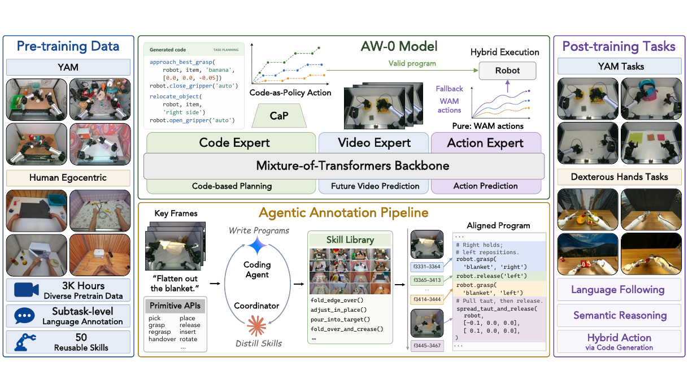
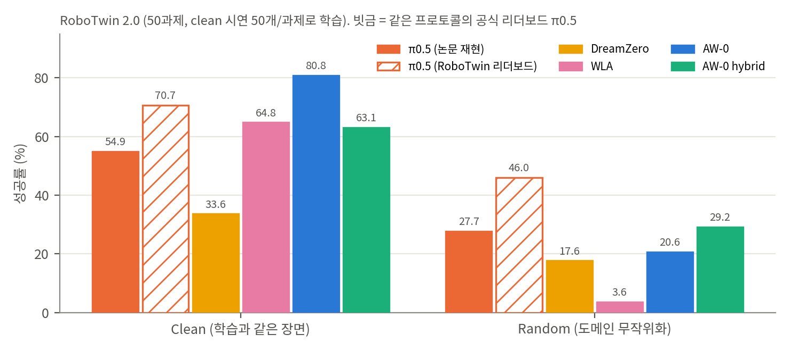
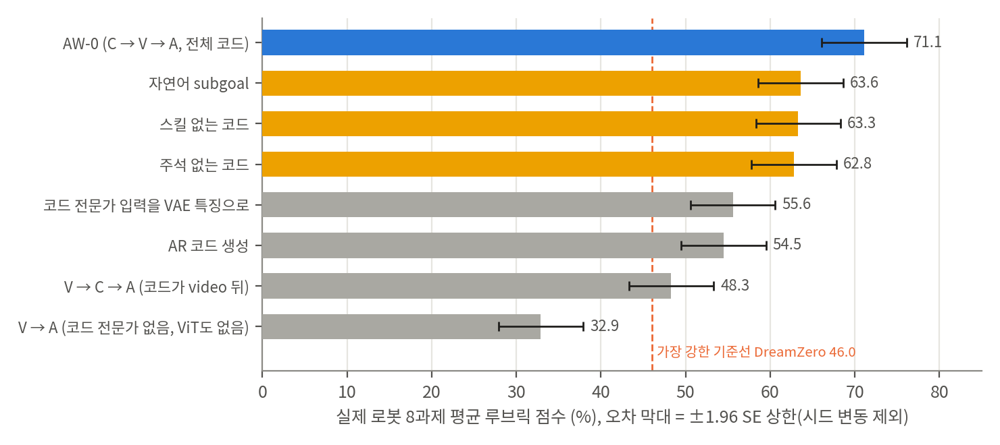
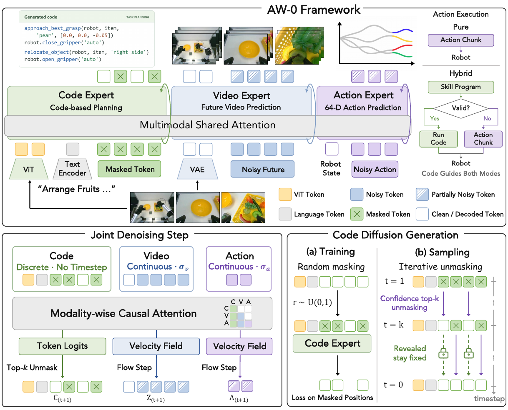
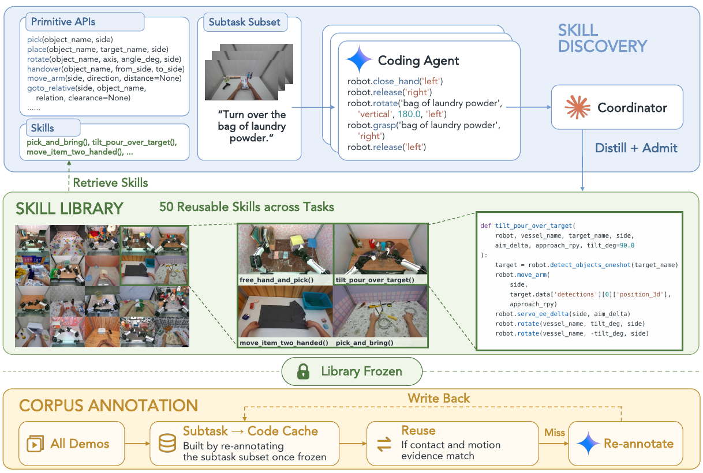
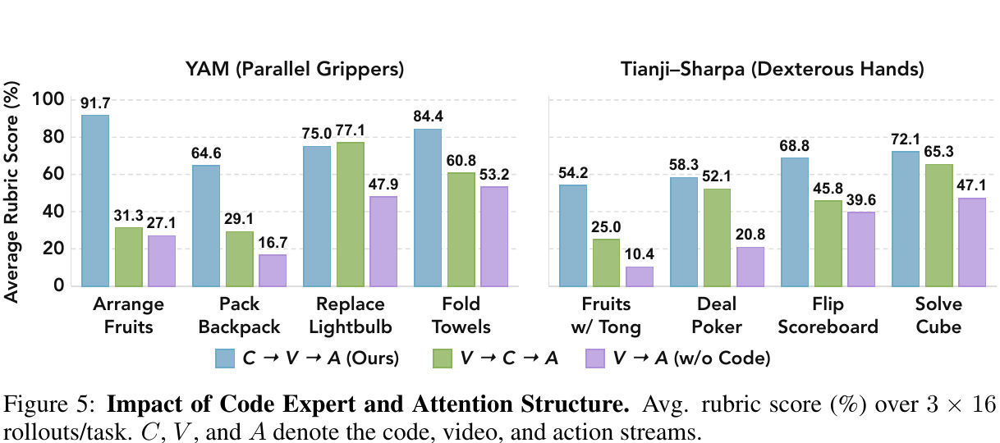
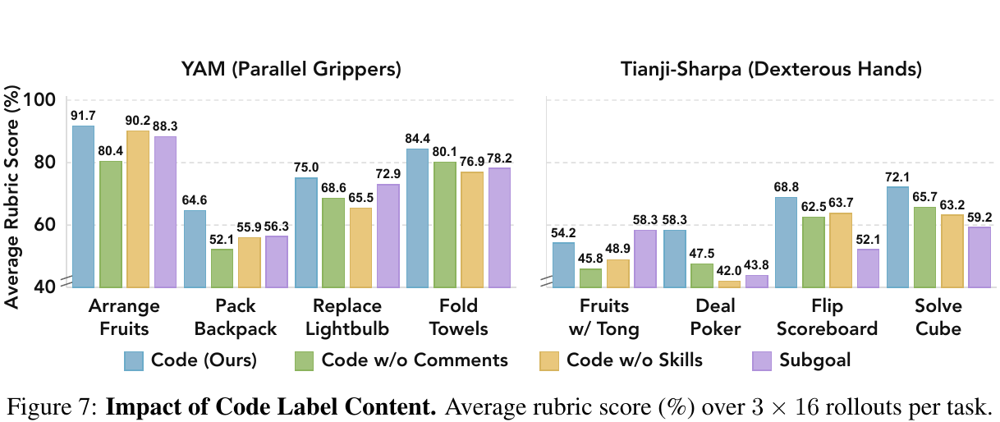

논문 Fig. 1: 사전학습 데이터와 자동 코드 라벨 파이프라인, 코드·video·action 세 전문가의 MoT, 하이브리드 실행.

Table 1과 RoboTwin 공식 리더보드 π0.5(빗금). 학습 데이터(50과제 × clean 시연 50개)는 같다.

실제 로봇 8과제 평균: Fig. 5·7, Table 3·4의 모든 변형. 주황은 계획 형식만 바꾼 변형.
275818e, 2026-10-27). 사전학습 체크포인트와 RoboTwin 사후학습 체크포인트가 Hugging Face에 공개되어 있고, 사전학습 데이터(약 2,900시간)와 실제 로봇 사후학습 데이터는 공개되지 않았습니다.World Action Model(WAM)은 미래 영상과 행동을 함께 예측하지만, 기술을 재사용하거나 조합하는 명시적 구조가 없습니다. 반대로 코드 기반 agentic 로봇 시스템(Code-as-Policies 계열)은 기술을 프로그램으로 조합하지만, 물리 동역학을 예측하지 않습니다. AW-0는 둘을 합칩니다. Mixture-of-Transformers(MoT) 안에 코드 전문가, video 전문가, action 전문가를 두고 세 스트림을 한 번에 denoise합니다. 코드는 두 역할을 합니다.
학습용 프로그램 라벨은 VLM(Gemini 3.1 Pro)과 coding agent(Claude Code, Opus 4.8)로 자동 생성하고, 반복되는 루틴을 스킬 라이브러리(50개)로 모읍니다. 저자들은 다음 결과를 보고합니다.
조건 C_t = {O_t(다시점 관측), L(지시문), S_t(로봇 상태), M_t(이전 프로그램 조각의 메모리)}에서 p_θ(C₀, Z₀, A₀ | C_t)를 학습합니다.
하나의 네트워크 F_θ가 masked code C̃_r, noisy video Z_σv, noisy action A_σa를 받아 코드 logit과 두 속도장을 동시에 냅니다(Eq. 2).
| 코드 전문가 | video 전문가 | action 전문가 | |
|---|---|---|---|
| 초기화 | SDAR-1.7B (임베딩·LN·FFN·출력층 동결, attention 투영만 학습) | Cosmos-Predict2.5-2B | 처음부터 |
| 폭 / FFN | 2,048 / 6,144 | 2,048 / 8,192 | 1,024 / 4,096 |
| 입력 | 동결 Qwen3-VL-2B ViT 토큰 210개(3시점 × 70) + 지시문 + 코드 canvas | Wan2.2 VAE 잠재(48채널), 첫 프레임 조건, 9프레임 stride 4 | 로봇 상태 + 잡음 행동 |
| 생성 | LLaDA식 masked diffusion (이산) | flow matching | flow matching |

논문 Fig. 2: 세 전문가 MoT, 모달리티별 C → V → A causal attention, 코드의 마스크 확산 학습과 신뢰도 순 공개.

논문 Fig. 3: 자동 라벨 파이프라인. 스킬 발견(coding agent + coordinator) → 라이브러리 동결 → 캐시 재사용 라벨링.
메모리: 지금까지 생성한 코드 조각을 학습 가능한 K개 슬롯으로 압축해 코드 스트림 앞에 붙입니다. 학습 때는 확률 p로 모델 자신의 예측을 넣습니다. p와 K는 본문에 적혀 있지 않습니다.
기본 모드: 코드는 실행하지 않습니다. 코드는 계획 조건일 뿐이고, 로봇은 action chunk가 움직입니다.
하이브리드 모드(Algorithm 1–2): 생성된 코드 조각을 Code-as-Policies 방식으로 실행할 수 있습니다. 실행하려면 다음 게이트를 모두 통과해야 합니다.
게이트를 통과하지 못하면 같은 forward의 action chunk를 씁니다. 저자들은 "생성 코드를 수리하지 않고 검사한다"고 씁니다.
50과제, 과제·설정당 50회 시행입니다. 학습은 clean 시연으로만 하고, clean과 random(도메인 무작위화) 장면에서 평가합니다.
| 방법 | Clean | Random | 평균 |
|---|---|---|---|
| π0.5 | 54.9 | 27.7 | 41.3 |
| DreamZero | 33.6 | 17.6 | 25.6 |
| EgoScale | 26.2 | 2.9 | 14.5 |
| WLA | 64.8 | 3.6 | 34.2 |
| AW-0 | 80.8 | 20.6 | 50.7 |
| AW-0 (hybrid) | 63.1 | 29.2 | 46.2 |
플랫폼은 두 가지이고, 과제는 플랫폼마다 4개입니다.
과제당 시연 100개로 학습했습니다. 평가는 3개 학습 시드 × 16회이고, 부록 E의 가산 루브릭으로 채점합니다(부분 점수 있음).
| 과제 | π0.5 | DreamZero | EgoScale | WLA | AW-0 |
|---|---|---|---|---|---|
| Arrange Fruits | 70.8 | 53.3 | 37.5 | 39.6 | 91.7 |
| Pack Backpack | 49.7 | 36.7 | 27.3 | 29.6 | 64.6 |
| Replace Lightbulb | 63.8 | 67.4 | 60.2 | 56.0 | 75.0 |
| Fold Towels | 81.7 | 79.8 | 53.3 | 74.6 | 84.4 |
| Fruits w/ Tong | 7.3 | 22.6 | 17.6 | 14.2 | 54.2 |
| Deal Poker | 13.1 | 37.1 | 25.6 | 22.9 | 58.3 |
| Flip Scoreboard | 26.3 | 28.4 | 40.8 | 29.7 | 68.8 |
| Solve Cube | 36.1 | 42.5 | 24.9 | 52.3 | 72.1 |
| 평균 | 43.6 | 46.0 | 35.9 | 39.9 | 71.1 |
YAM의 Fold Towels 과제에서 하이브리드 실행은 90.6점, action chunk 실행은 84.4점입니다(§3.2). 시행 수는 적혀 있지 않습니다.

논문 Fig. 5: attention 순서와 코드 전문가 유무.
모두 실제 로봇 8과제의 평균이고, 같은 프로토콜(3 × 16)로 평가했습니다.
| 변형 | 평균 | 위치 |
|---|---|---|
| V → A (코드 전문가 없음) | 32.9 | Fig. 5, 6 |
| V → C → A (코드가 video 뒤에) | 48.3 | Fig. 5 (프로젝트 페이지) |
| AR 코드 생성 | 54.5 | Table 4 |
| 코드 전문가 입력을 ViT 대신 VAE 특징으로 | 55.6 | Table 3 |
| 주석 없는 코드 | 62.8 | Fig. 7 |
| 스킬 없는 코드(primitive만) | 63.3 | Fig. 7 |
| 자연어 subgoal | 63.6 | Fig. 7 |
| AW-0 (C → V → A, 전체 코드, joint) | 71.1 |
RTX 5090에서 측정한 추론 지연은 코드 없음 0.19 s, joint 0.23 s, AR 0.55 s입니다(Fig. 6).

논문 Fig. 7: 코드 라벨 내용(전체, 주석 없음, 스킬 없음, 자연어 subgoal).
03, 04에서 근거)03 §2).03 §3).04 D6).03 §4).04 §2).03 §5).재실행 방법:
python3 analysis/table_check.py
python3 analysis/noise_toy.py
python3 analysis/plot_figures.py
결과는 table_check_results.json과 noise_toy_results.json에 있고, 그래프는 report/figures/에 있습니다.
| 확인 | 결과 |
|---|---|
| Table 11(50과제 × 6방법 × 2설정)의 평균 → Table 1 | 12개 평균이 모두 일치(최대 차 0.04) |
| Table 11 값이 50회 시행 격자(2% 단위)에 있는가 | 600칸 모두 짝수 → 과제당 50회와 정합 |
| 본문 수치 36개(§3.1–3.3, 부록 A·B.1, 그림 평균) | 모두 일치 |
| Table 12: 전체 에피소드 step 수 = 성공률 × 성공 step + (1 − 성공률) × 실패 step | clean 26,729 vs 26,720, random 41,735 vs 41,716. 역산한 성공률 63.12%·29.24%는 Table 1의 63.1·29.2와 일치 |
| 실제 로봇 점수가 루브릭 격자(48회 × 최소 배점)에 있는가 | AW-0 8과제 모두 격자 위. 배점 0.1 과제 72칸 중 54칸 격자 위(무작위라면 약 48%, 이항 검정 p < 10⁻⁵) |
마지막 항목에서 격자를 벗어난 18칸은 Solve Cube(12칸 중 6칸)에 몰려 있습니다. 이는 루브릭 항목에 더 잘게 부분 점수를 주었거나, 그 칸의 시행 수가 48이 아니었다는 뜻일 수 있습니다. 논문만으로는 둘 중 어느 쪽인지 구분할 수 없습니다. 오류의 증거로 보지는 않습니다.
RoboTwin 2.0 공식 리더보드(paper/site/robotwin_leaderboard.json, 2026-10-25 갱신)의 조건은 다음과 같습니다.
AW-0의 학습 데이터 조건과 같습니다. 이 리더보드에 **RoboTwin 팀이 직접 학습한 π0.5(co-train, 50과제를 정책 하나로 학습)**가 2026-08-10부터 올라와 있습니다.
| Clean | Random | 평균 | |
|---|---|---|---|
| π0.5, 논문 재현 (Table 1) | 54.9 | 27.7 | 41.3 |
| π0.5, RoboTwin 리더보드 | 70.66 | 46.0 | 58.3 |
| AW-0 | 80.8 | 20.6 | 50.7 |
| AW-0 hybrid | 63.1 | 29.2 | 46.2 |
판단: 리더보드 값이 같은 학습 데이터와 평가 장면에서 나온 것이라면, Table 1의 "평균이 가장 높다"와 "하이브리드가 random에서 π0.5를 포함한 모든 기준선보다 높다"는 논문이 직접 재현한 기준선 안에서만 성립합니다. 평가 장면의 seed가 같은지는 논문에 적혀 있지 않습니다.
Fig. 5, Fig. 7, Table 3–4는 같은 실제 로봇 8과제를 같은 프로토콜로 평가했습니다. 그래서 평균을 한 줄로 세울 수 있습니다(report/figures/ablation_ladder.png).
| 변형 | 평균 | 무엇이 빠졌나 |
|---|---|---|
| V → A (w/o code) | 32.9 | 코드 전문가 전체 + Qwen3-VL ViT 시각 경로 |
| V → C → A | 48.3 | 코드가 video를 이끌지 못함 |
| AR 코드 | 54.5 | joint denoising |
| VAE 특징으로 코드 계획 | 55.6 | 코드 전문가의 ViT 입력 |
| 주석 없는 코드 | 62.8 | 코드 안의 자연어 |
| 스킬 없는 코드 | 63.3 | 스킬 추상화 |
| 자연어 subgoal | 63.6 | 코드 형식 전체 (자연어 계획은 유지) |
| AW-0 | 71.1 |
build.py)에서 Qwen3-VL ViT prefix는 use_code_expert가 켜졌을 때만 붙습니다. w/o code 변형의 video와 action 전문가가 보는 관측은 Wan2.2 VAE 잠재뿐입니다. Table 3에서 코드 전문가의 입력만 ViT에서 VAE로 바꿔도 15.6점이 떨어지므로, 32.9 → 71.1의 차이 가운데 상당 부분이 ViT의 몫일 수 있습니다. "코드는 있고 ViT가 없는" 변형과 "코드는 없고 ViT가 있는" 변형이 없어서, 두 효과를 나눌 수 없습니다.| 비교 | 평균 차 | 이긴/진 과제 | 부호 검정 p | 과제별 Fisher p < .05 (좋음/나쁨) |
|---|---|---|---|---|
| AW-0 vs WLA, clean | +16.0 | 31/12 | 0.005 | 21 / 1 |
| AW-0 vs π0.5(논문), random | −7.2 | 20/24 | 0.65 | 3 / 14 |
| hybrid vs AW-0, random | +8.7 | 24/19 | 0.54 | 15 / 4 |
| hybrid vs π0.5(논문), random | +1.5 | 25/21 | 0.66 | 13 / 14 |
| hybrid vs AW-0, clean | −17.7 | 14/35 | 0.004 | 6 / 22 |
루브릭 점수가 [0, 1] 범위이면 분산은 m(1 − m) 이하입니다. 이 상한으로 표본 오차를 잡았습니다. 시드 간 변동은 포함하지 않았습니다.
| 비교 | 8과제 평균 차 | 평균의 z (상한) | 과제별 |z| ≥ 1.96 |
|---|---|---|---|
| AW-0 vs DreamZero | +25.2 | 7.7 | 6/8 |
| AW-0 vs π0.5 | +27.5 | 8.9 | 5/8 |
| 코드 vs 자연어 subgoal | +7.5 | 2.3 | 0/8 |
| 코드 vs 주석 없는 코드 | +8.3 | 2.5 | 0/8 |
| 코드 vs 스킬 없는 코드 | +7.9 | 2.4 | 0/8 |
| 하이브리드 vs chunk, Fold (n = 48 가정) | +6.2 | 0.9 |
noise_toy.py)N1. 사전학습 video 분포(u = 0.999·Beta(7,1), shift 5)에서는 σ > 0.9가 95.5%이고, 중앙값은 σ = 0.979입니다. 공식 코드 주석의 "~95%"와 일치합니다. 이 분포만 쓰면 action 손실은 거의 잡음뿐인 video만 보고 학습됩니다. Eq. 5–6이 이 문제를 고칩니다.
N2. α = 0.5이므로 가중치의 상한은 1/α = 1/(1 − α) = 2입니다. 실제 최댓값은 w_v 1.75, w_g 2.0입니다. Table 6의 importance clip 4.0은 한 번도 작동하지 않습니다. 공식 코드 주석도 같은 상한을 적어 둡니다.
N3. 정규화하지 않은 가중 손실은 목표 분포의 기댓값을 정확히 재현합니다. 공식 설정처럼 GPU당 배치 6(3 + 3 층화)에서 "배치 평균 1로 정규화"하면 작은 편향이 생깁니다. 예를 들어 action 손실이 σ < 0.7 구간을 보는 비율은 31.8%가 아니라 30.0%가 됩니다. 실효 표본 수는 배치의 약 70%입니다. 영향은 작습니다.
N4. 추론에서 video와 action은 같은 단계 수로 함께 denoise합니다. 공식 코드에서 action은 각 단계 시작 시점의 video를 읽습니다. 그래서 action이 마지막으로 읽는 video의 σ는 단계 수에 따라 다음과 같습니다(report/figures/noise_sigma.png).
| joint 단계 | action이 읽는 video σ | 마지막 σ |
|---|---|---|
| 4 (논문 Table 6) | 1.0, 0.94, 0.83, 0.63 | 0.625 |
| 10 (실물 서버 기본값) | 1.0 … 0.36 | 0.357 |
| 20 (RoboTwin 공개 설정) | 1.0 … 0.21 | 0.208 |
| 40 (RoboTwin 하이브리드) | 1.0 … 0.11 | 0.114 |
논문 설정(4단계)에서 action이 보는 "미래 영상"은 잡음이 62.5% 이상 섞인 상태입니다. 논문이 말하는 predictive guidance는 선명한 미래 영상이 아니라, 덜 denoise된 video 전문가의 내부 특징입니다. 지연 0.23 s(Fig. 6)는 4단계일 때의 값으로 보입니다. RoboTwin 결과를 낸 공개 설정(20단계)의 지연은 이보다 클 것입니다.
N5. 4단계 추론이 쓰는 σ 범위(0.625–1)는 균등 목표에서 학습 표본의 75%를 차지합니다. 나머지 25%(σ < 0.625)에서 학습한 action은 4단계 추론에서는 쓰이지 않습니다.
_build_mot_attention_mask). 그래서 계획은 관측 이미지(ViT)와 지시문만으로 정해지고, 예측된 미래 영상으로 수정되지 않습니다. 저자들이 V → C → A보다 C → V → A가 낫다고 한 결과(48.3 vs 71.1)도 같은 방향입니다. 코드는 영상을 보지 않는 편이 낫습니다.275818e5787d59012eba4c43504342f1201ad25b (2026-10-27)code_official/에 clone했고, git에서는 제외합니다.| 항목 | 논문 | 코드 | 위치 |
|---|---|---|---|
| 세 전문가 MoT, C → V → A mask | §2.1 | 코드는 attention 섬(ViT prefix + 지시문 + canvas만), video는 코드를 읽고, action은 모두 읽음 | agenticwam_model.py _build_mot_attention_mask |
| 코드 확산 목표 | LLaDA식 masked diffusion | code_objective: joint (기본), ar, blockdiff 선택 |
configs/model/agenticwam_cosmos.yaml |
| video noise | u = 0.999·Beta(7,1), shift 5 | video_noise_beta: [7, 1, 0.999], sigma_shift: 5 |
같은 파일 |
| Noise 재표본화 | α = 0.5, w_v = p_pre/q, w_g = U/q, clip 4, 배치 평균 정규화 | 같은 식, 층화 표본(배치의 round(αB)개를 p_pre에서) | _sample_video_t_rw |
| 손실 가중치 | (v, c, a) = (1, 0.5, 1) | loss_lambda_video 1.0, code 0.5, action 1.0 |
model yaml |
| 코드 전문가 동결 | SDAR 임베딩·LN·FFN·출력층 동결, attention·modulation 학습 | freeze_backbone=True 기본, self_attn·modulation은 항상 학습 |
code_expert.py |
| 사전학습 | 배치 6 × 48 GPU × 누적 9, lr 1e-4, 1 epoch, 지시문·프로그램 마스크 15% | batch_size 6, gradient_accumulation_steps 9, learning_rate 1e-4, num_epochs 1, AGENTICWAM_CFG_DROPOUT=0.15,0.0 |
pretrain_magic_soup.yaml |
| 하이브리드 실행에 특권 정보 없음 | 부록 J.2 | 공개 평가 스크립트가 AGENTICWAM_HYBRID_PERCEPTION=1(Molmo + SAM 3 + GraspNet)과 AGENTICWAM_NN_REPAIR=0으로 설정 |
robotwin/hybrid_eval/launch.py |
| # | 항목 | 논문 | 공개 코드 | 영향 |
|---|---|---|---|---|
| D1 | "w/o code" 변형의 시각 입력 | 코드 전문가만 뺀 것으로 서술(§3.3 Q1) | use_code_expert=false이면 Qwen3-VL ViT prefix도 붙지 않음(build.py: "the vision prefix only feeds the code expert") |
32.9 → 71.1 차이에 ViT 효과가 섞임 (03 §3) |
| D2 | 메모리 캐시 | 학습형 K개 슬롯, 확률 p로 자기 예측 사용(§2.3) | code_memory: false이고, 공개 설정 어디에서도 켜지 않음. 대신 프롬프트에 이전 코드 조각을 텍스트로 넣거나(# Completed:), 개수 + 마지막 조각만 넣음. RoboTwin 하이브리드는 이력 없음(code_slices_no_history: true) |
논문 결과가 학습형 메모리로 얻은 것인지, 공개 설정이 논문 실험과 같은지 확인 불가 |
| D3 | joint denoising 단계 수 | 4 (Table 6), 지연 0.23 s | 실물 배포 서버 기본 10, RoboTwin WAM 20, hybrid 40 | 공개 설정으로 RoboTwin을 돌리면 지연이 0.23 s보다 클 것. action이 읽는 video의 선명도도 다름 (03 §5) |
| D4 | 코드 canvas | 추론 128 토큰 | 실물 64, RoboTwin WAM 128, hybrid 124(학습 canvas 고정, EOS로 채움) | 설정 주석: "canvas가 크면 분포 밖이라 모델이 filler로 채움" |
| D5 | RoboTwin 학습 설정 | 2노드 × 8 GPU × 배치 6 = 96, lr 2e-4, 100k step (부록 A) | WAM: GPU당 배치 2, lr 1e-4, 200k step. hybrid: 3노드 × 8 × 4 = 96, lr 2e-4, 15k step | 논문 숫자를 낸 설정이 어느 쪽인지 불명확 |
| D6 | 기본 모드 vs 하이브리드 모드의 차이 | "학습 데이터 수집 방식과 실행 방식이 다르다"(부록 J.2) | 그 외에도 학습 step(200k vs 15k), 시작 체크포인트(robotwin_wam_init_ckpt vs robotwin_hybrid_init_ckpt), 추론 단계(20 vs 40), 코드 디코딩(신뢰도 임계 0 vs 0.5, 단계당 공개 상한 없음 vs 4), 코드 이력(있음 vs 없음)이 다름 |
clean −17.7, random +8.6의 원인을 "하이브리드 실행"에 돌릴 수 없음 |
| D7 | 하이브리드 코드 수리 | "생성된 조각은 수리 없이 검사한다"(부록 I) | arbiter가 실행 전에 규칙 기반 repair를 적용. 컴파일을 막는 "잔해" 줄(식별자만 있는 줄 등)을 주석 처리(R1). 코드처럼 보이는 줄을 주석 처리해야 하면(R2) 거부. 최근접 학습 조각으로 바꾸는 NN_REPAIR도 구현되어 있으나 공개 평가에서는 끔 |
R1 수리가 통과율을 얼마나 올렸는지 논문에 없음 |
| D8 | 실제 로봇 사후학습 길이 | 20 epoch, 시연 100개 | max_steps: 100000, 배치 4 |
에피소드 길이를 모르므로 같은지 확인 불가 |
| D9 | RoboTwin 평가 횟수 | 과제당 50회 | 공개 벤치마크 계획 standard는 과제당 100회(리더보드와 같음) |
Table 11 값이 모두 2% 단위이므로 논문 결과는 50회와 정합 |
| D10 | 실제 로봇 학습 시드 | 3개 (§3.2) | seed: 42 하나만 설정, 시드 반복 스크립트 없음 |
시드별 결과·분산을 재현할 도구가 없음 |
| D11 | ViT merger 저장 버그 | merger는 학습 가능(부록 A) | 주석 "FIX 2026-09-03: memory + ViT merger are saved", AGENTICWAM_FREEZE_VIT_MERGER=1은 "수정 전 ViT 실행과의 비교 가능성"을 위한 옵션 |
2026-09-03 이전 체크포인트에는 학습된 merger가 저장되지 않았을 수 있음. 어느 결과가 영향을 받았는지는 알 수 없음 |
| # | 확인 | 결과 |
|---|---|---|
| V1 | Table 11 → Table 1 평균 12개 | 모두 일치(최대 차 0.04) |
| V2 | Table 11 600칸이 50회 시행 격자에 있는가 | 모두 2% 단위 |
| V3 | 본문 수치·그림 평균 36개 | 모두 일치 |
| V4 | Table 12의 전체 = 성공·실패 가중 합 | step 수와 코드 비율 모두 일치, 역산 성공률 63.12%·29.24% |
| V5 | 실제 로봇 점수의 루브릭 격자 | AW-0 8칸 모두 격자 위, 배점 0.1 과제 72칸 중 54칸(무작위 기대 약 35칸) |
판정: ✅ 지지됨 · ⚠️ 부분적으로 지지되거나 해석에 주의 · ❌ 근거 부족
| # | 주장 (위치) | 판정 | 근거 |
|---|---|---|---|
| C1 | RoboTwin에서 평균 성공률이 가장 높다(50.7%) (§3.1) | ⚠️ | 논문이 재현한 기준선 중에서는 맞음. RoboTwin 공식 리더보드의 π0.5(같은 학습 데이터)는 평균 58.3. 리더보드에 먼저 등록된 27개 항목 중 13위 (03 §2) |
| C2 | clean에서 WLA보다 16.0점 높다 (§3.1) | ✅ | 과제 단위 부호 검정 p = 0.005, 과제별 Fisher로 21개 과제 유의하게 좋음, 1개 나쁨 |
| C3 | 하이브리드 실행이 분포 이동에 강건하다(random 20.6 → 29.2) (§3.1) | ⚠️ | 이득의 65%가 5개 과제에서 나옴(과제 단위 부호 검정 p = 0.54). 학습 데이터·step·디코딩이 모두 달라 실행 방식의 효과로 분리 불가(D6) |
| C4 | 하이브리드가 random에서 π0.5를 포함한 모든 기준선보다 높다 (§3.1) | ❌ | 논문 π0.5(27.7) 대비 과제 단위로 25승 21패(p = 0.66). 리더보드 π0.5(46.0)보다 16.8점 낮음 |
| C5 | 실제 로봇 8과제에서 기준선보다 25.1점 높다 (§3.2) | ✅ | 8과제 평균 차의 z가 분산 상한 기준 7.7. 과제별로도 6/8에서 표본 오차를 넘음. 다만 시드별 값 미보고 |
| C6 | 코드 기반 계획이 언어 이해·의미 추론을 강화한다 (§3.2, §3.3 Q1) | ⚠️ | w/o code(32.9) 대비 이득의 80%는 자연어 subgoal로도 얻음. w/o code 변형은 ViT도 없음(D1) |
| C7 | C → V → A 순서가 낫다 (§3.3 Q1) | ✅ | 48.3 vs 71.1. 7/8 과제에서 낫고 Replace Lightbulb만 V → C → A가 높음(77.1 vs 75.0). 본문은 이 예외를 언급하지 않음 |
| C8 | ViT가 VAE보다 코드 전문가 입력으로 낫다 (§3.3, Table 3) | ✅ | 8/8, 평균 +15.6 (z 상한 4.7) |
| C9 | 주석·스킬·코드 형식이 모두 기여한다 (§3.3 Q2, Fig. 7) | ⚠️ | 방향은 일관되지만 과제별 차이는 모두 표본 오차 상한 이내. 평균 차 7.5–8.3점(z 상한 2.3–2.5), 시드 변동 미반영 |
| C10 | joint denoising이 AR보다 좋고 2.39배 빠르다 (§3.3 Q3) | ✅ (조건부) | 7/8, 평균 +16.6. 지연은 4단계 설정에서의 값. 공개 설정(10–40단계)의 지연은 미보고(D3) |
| C11 | 코드를 더해도 지연은 0.04 s(21.1%)만 늘어난다 (§3.3) | ✅ (조건부) | 같은 4단계 조건의 측정값. 산술은 맞음 |
| C12 | 실제 로봇에서 하이브리드가 action chunk보다 낫다(90.6 vs 84.4) (§3.2) | ⚠️ | 과제 1개, 시행 수 미기재. n = 48이어도 z 상한 0.9 |
| C13 | 사전학습한 코드 전문가가 시각에 근거해 코드를 만든다 (부록 F.1) | ✅ (정성) | 관측을 섞으면 코드 손실이 1.774 증가. 다만 primitive F1 0.365, 스킬 호출 비율 29.2%로 의미 일치는 부분적 |
docs/ROBOTWIN.md). GPU가 필요해서 이 기기에서는 하지 않습니다.codegen/과 .claude/skills/에 VLM 라벨 파이프라인이 있습니다. 다만 Gemini·Claude API 비용이 들고, 데이터를 외부로 보내야 합니다.table_check.py)noise_toy.py)AW-0는 두 갈래를 하나의 생성 모델로 묶습니다. 하나는 "미래를 예측하며 행동하는 정책"(World Action Model)이고, 다른 하나는 "코드로 계획하고 기술을 조합하는 에이전트"(agentic robotics)입니다.
[영상 예측 → 정책] [언어·코드 → 로봇]
Finn et al. 2016 (action-conditioned video) SayCan (Ahn et al. 2022)
V-JEPA 2 (Assran et al. 2025) Code as Policies (Liang et al. 2023)
│ VoxPoser (Huang et al. 2023)
Cosmos-Predict2.5 (NVIDIA 2025) CodeAct (Wang et al. 2024): 코드가 텍스트보다 나은 행동 공간
│ │
WAM: DreamZero (Ye et al. 2026) agentic coding: CaP-X (Fu et al. 2026), ASPIRE (Lu et al. 2026)
Motus (Bi et al. 2025) frontier model 제어: Hi Robot (Shi et al. 2025), Gemini Robotics
WLA (Yang et al. 2026): 텍스트 subtask + subgoal 영상 + 행동
└──────────────────────────┬──────────────────────────┘
AW-0: 코드 · 미래 영상 · 행동을 MoT 하나에서 joint denoise
| 구성 요소 | 가져온 곳 | AW-0에서 바뀐 점 |
|---|---|---|
| Mixture-of-Transformers | Liang et al. 2025 (arXiv:2411.04996) | 모달리티별 Q/K/V/O·LN·FFN을 두고 층마다 joint attention. C → V → A blockwise causal mask |
| 코드 전문가 본체 | SDAR-1.7B (Cheng et al. 2025, arXiv:2510.06303), block diffusion LM | 임베딩·FFN·출력층을 동결하고 attention 투영만 학습. 학습 목표는 LLaDA식 전체 마스크 확산(joint), block diffusion과 AR은 대안 |
| 이산 확산 디코딩 | LLaDA (Nie et al. 2025, arXiv:2502.09992) | 신뢰도 상위 k개 확정을 video·action의 flow step과 같은 루프에서 수행 |
| 코드 전문가 시각 입력 | Qwen3-VL-2B vision tower (동결) + 학습 merger | VAE 특징 대신 쓰면 71.1 vs 55.6 (Table 3) |
| video 전문가 | Cosmos-Predict2.5-2B, VAE는 Wan2.2(48채널)로 교체 | 입력·출력 투영 재초기화, 다시점 3D RoPE |
| action 전문가 | DiT를 처음부터 학습 | video와 code를 attention으로 읽음 |
| 언어 조건(video·action) | Cosmos-Reason1-7B 임베딩(오프라인 계산) | |
| 코드 라벨 | Gemini 3.1 Pro(annotator) + Claude Code/Opus 4.8(coordinator) | 스킬 50개 동결, 사건 일치 기반 캐시 재사용 (부록 K) |
| 하이브리드 실행 primitive | CaP-X 스타일 API + Molmo, SAM 3, Contact-GraspNet, RoboTwin 모션 플래너 | 시뮬레이션 시연 수집은 Claude Opus 4.8이 ASPIRE 방식으로 쓴 프로그램 실행 |
| 방법 | 계획 표현 | 계획과 행동의 결합 | AW-0와의 차이 |
|---|---|---|---|
| WLA (Yang et al. 2026) | 텍스트 subtask + subgoal 영상 | 자기회귀 | AW-0는 코드를 joint denoise. Table 4의 AR 변형(54.5)이 WLA식 직렬 생성에 가까운 대조군 |
| Tang et al. 2026 | 동적으로 갱신하는 subtask 지시문 | 지시문이 video·action 조건 | 자연어 계획. Fig. 7의 Subgoal 변형(63.6)이 가장 가까운 대조군 |
| DreamZero (Ye et al. 2026) | 없음 | video + action joint diffusion | AW-0의 "w/o code"와 구조가 가장 가까움. 다만 AW-0 w/o code(32.9)는 DreamZero(46.0)보다 낮음 |
| Code as Policies / CaP-X / ASPIRE | 실행 코드 | 코드가 곧 정책(primitive 호출) | AW-0 하이브리드 모드가 이 방식을 학습된 action과 섞음 |
| Hi Robot, Gemini Robotics | 상위 VLM이 지시·도구 호출 | 상위 모델이 하위 정책을 부름 | 상위 모델이 별도. AW-0는 한 네트워크 안에서 계획 |
| π0.5 (Black et al. 2025) | VLM 백본이 고수준 subtask 텍스트 예측 가능 | flow-matching action expert | 영상 예측 없음. RoboTwin 리더보드 결과(70.66/46.0)가 논문 재현값(54.9/27.7)보다 높음 (03 §2) |
03 §3).| 논문 | 관계 |
|---|---|
Hydra-0 (hydra0/) |
둘 다 NVIDIA 계열 video world model(Cosmos 계열)을 정책에 쓰는 WAM입니다. Hydra-0는 행동을 이미지 평면의 점 궤적(action flow)으로 표현하고, AW-0는 64차원 말단 자세·관절 행동을 쓰면서 코드 계획을 더합니다. 두 논문 모두 "영상 예측이 행동을 돕는다"는 주장을 같은 구조의 대조군 없이 내세운다는 점에서 비슷합니다. |
ZeroDex (zerodex/) |
학습된 정책 없이 VLM과 고정 primitive로 손을 움직이는 agentic 쪽 극단입니다. AW-0의 하이브리드 모드가 실패하는 이유(primitive의 실패를 그대로 물려받음, 부록 J.2)는 ZeroDex의 단계별 실패 귀속 분석과 같은 문제입니다. |
GPT-as-Tactile-Policy (gpt6_astra_tactile/) |
대형 언어 모델이 느린 계획을 맡고 빠른 정책이 실행하는 구조입니다. AW-0는 계획과 실행을 한 forward에 넣어 지연을 0.04 s로 줄였다고 주장합니다. 반면 AR 코드 생성은 0.55 s가 걸립니다(Fig. 6). |
Chronos Policy (chronospolicy/) |
AW-0는 32 step chunk 중 24 step마다 다시 계획합니다(공개 서버 기본값). 추론 지연 0.23 s 동안의 관측 지연은 다루지 않습니다. Chronos의 시간 조건화가 보완할 수 있는 부분입니다. |
FlashDexRetarget (flashdexretarget/) |
같은 Sharpa Wave 손을 씁니다. AW-0는 사람 1인칭 영상의 손 운동을 22-DoF 관절 목표로 리타겟해서 사전학습에 넣습니다(부록 B.1). 리타겟 품질 평가는 논문에 없습니다. |
| DexScrew, Contact-Grounded Policy | 접촉이 많은 다지 손 과제입니다. AW-0의 실패 사례(카드 미끄러짐, 손끝 접촉 상실, 부록 H)는 촉각 없이 시각만 쓰는 정책의 한계와 같습니다. AW-0는 촉각 입력을 쓰지 않습니다. |
03 §2). 이 중 상당수는 AW-0 공개(2026-10-21) 전에 등록되었습니다.